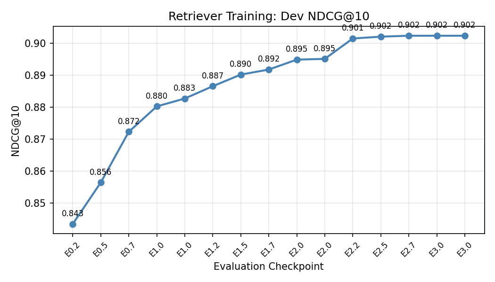
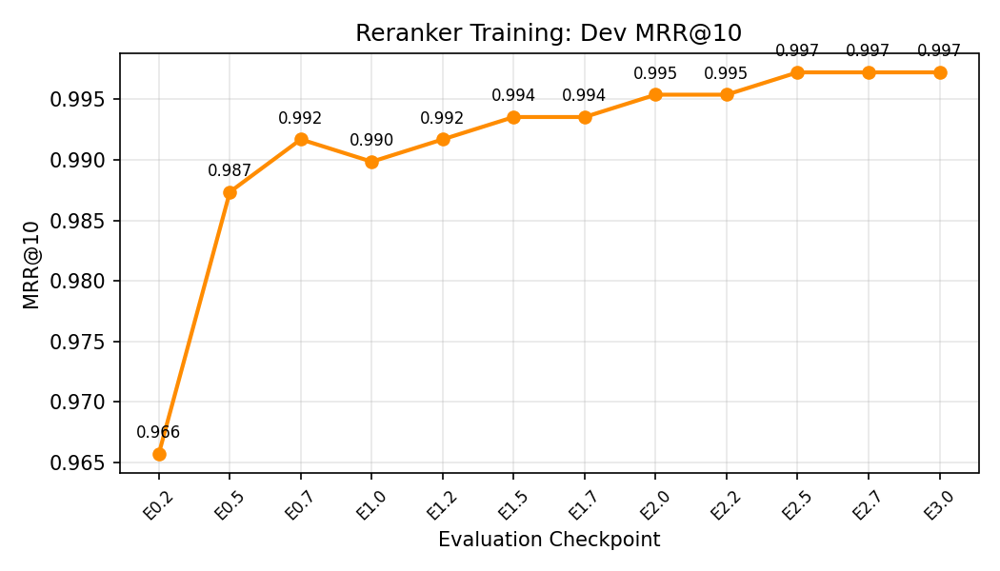
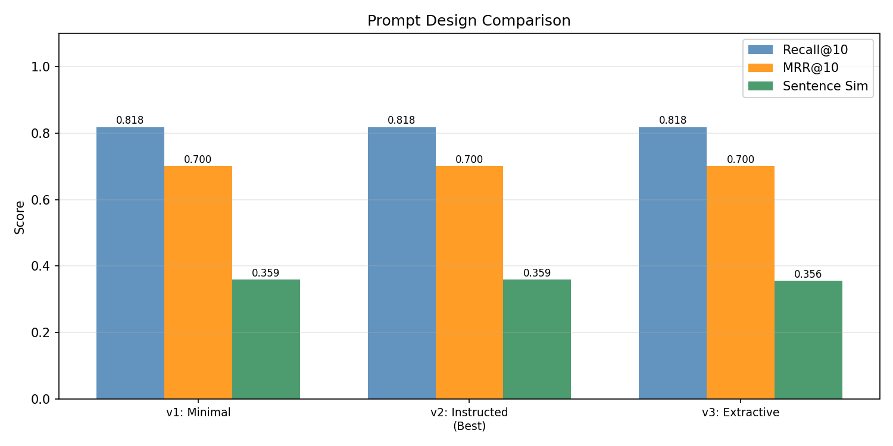
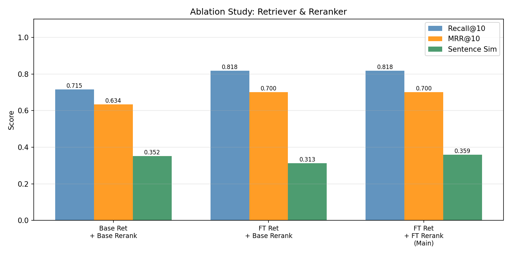
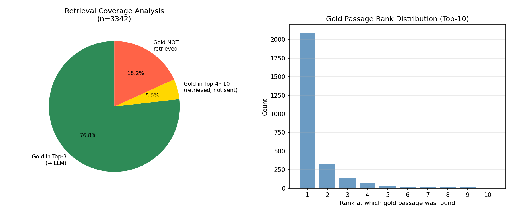
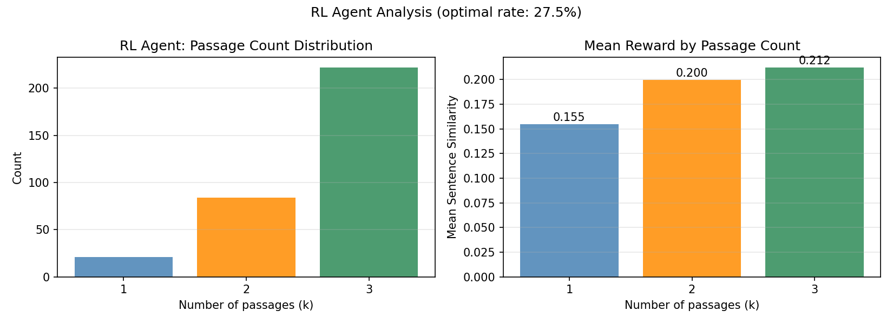

ADL 2025 HW3 — Conversational RAG System
Fine-tuning retriever & reranker, prompt engineering, and RL-based passage selection for open-domain QA
Retriever Training Process
Model
Base model: intfloat/multilingual-e5-small (384-dimensional embeddings, ~120 MB).
Training Data Construction
- Anchor: The
rewritefield fromtrain.txt(31,526 queries total). - Positive: The gold passage identified via
qrels.txt, fetched fromcorpus.txt. Each query has exactly one positive passage; we look it up by passage ID and retrieve its full text. - Negatives: Handled implicitly via MultipleNegativesRankingLoss (MNRL) in-batch negatives. With batch size 512, each query contends against 511 in-batch negatives — a very strong training signal. No additional hard negatives were mined (the BM25 evidence passages in
train.txtwere not used as explicit negatives for the retriever).
Prefix Convention
Following the multilingual-e5 recommendation, queries are prefixed with "query: " and corpus passages with "passage: " before encoding.
Loss Function — MultipleNegativesRankingLoss (MNRL)
Given a batch of (anchor, positive) pairs, all other positives in the batch serve as negatives. Cosine similarity is used as the scoring function, scaled by temperature τ = 20 (default). The loss is cross-entropy over the in-batch softmax:
L = -log( exp(sim(q_i, p_i) / τ) / Σ_j exp(sim(q_i, p_j) / τ) )This loss pushes the model to rank the true positive highest among all in-batch candidates. Larger batches provide more negatives and a stronger gradient signal.
Hyperparameters
| Parameter | Value |
|---|---|
| Base model | intfloat/multilingual-e5-small |
| Epochs | 3 |
| Batch size | 512 |
| Learning rate | 2e-5 |
| Max sequence length | 256 |
| Warmup ratio | 10% |
| Optimizer | AdamW (default) |
| Hardware | NVIDIA H200 (143 GB) |
| Training time | ~3 minutes |
Training Curve & Final Metrics
Evaluation was performed every ~15 steps (≈¼ epoch) on a 300-query dev split sampled from training data, yielding 15 checkpoints across 3 epochs.

Best checkpoint results (epoch 3): Recall@10 = 95.7% · MRR@10 = 0.8838 · NDCG@10 = 0.9023.
Reranker Training Process
Model
Base model: cross-encoder/ms-marco-MiniLM-L-12-v2 (~66 MB, 12-layer MiniLM Cross-Encoder).
Training Data Construction
- Positives: For each query in
train.txt, the gold passage fromqrels.txtforms a positive pair(query, passage, label=1.0). At most one positive per query → 31,526 positives. - Negatives: The 5 BM25-retrieved passages in
train.txtevidences withretrieval_label=0form negative pairs(query, passage, label=0.0)→ up to 5 × 31,526 ≈ 126,104 negatives.
Grand total: ~157,630 pairs at a 1:4 positive-to-negative ratio. These BM25 negatives are relatively "hard" since they were retrieved as top results but are not the gold passage.
Loss Function — Binary Cross-Entropy with Logits
The CrossEncoder outputs a single logit score for each (query, passage) pair. Training minimizes:
L = -[ y·log(σ(s)) + (1 − y)·log(1 − σ(s)) ]where s is the raw logit score, σ is the sigmoid function, and y ∈ {0, 1} is the label. The model learns to output high scores for relevant passages and low scores for non-relevant ones.
Hyperparameters
| Parameter | Value |
|---|---|
| Base model | cross-encoder/ms-marco-MiniLM-L-12-v2 |
| Epochs | 3 |
| Batch size | 64 |
| Learning rate | 2e-5 |
| Max sequence length | 512 |
| Warmup ratio | 10% |
| Optimizer | AdamW (default) |
| Hardware | NVIDIA H200 (143 GB) |
| Training time | ~46 minutes |
Training Curve
MRR@10 was evaluated on a 200-query dev split sampled from training data across 12 checkpoints (3 epochs).

| Step | Epoch | Dev MRR@10 |
|---|---|---|
| 615 | 0.25 | 0.9657 |
| 1230 | 0.50 | 0.9874 |
| 1845 | 0.75 | 0.9917 |
| 2460 | 1.00 | 0.9899 |
| 3075 | 1.25 | 0.9917 |
| 3690 | 1.50 | 0.9935 |
| 4305 | 1.75 | 0.9935 |
| 4920 | 2.00 | 0.9954 |
| 5535 | 2.25 | 0.9954 |
| 6150 | 2.50 | 0.9972 |
| 6765 | 2.75 | 0.9972 |
| 7380 | 3.00 | 0.9972 |
Why We Submit the Base Reranker
Despite near-perfect dev MRR, the fine-tuned reranker severely degrades test performance due to overfitting:
| Reranker | Test MRR@10 |
|---|---|
| Base (no fine-tuning) | 0.7003 |
| Fine-tuned | 0.4372 |
Root cause: The dev set was drawn from the same BM25-negative distribution as training. The model memorised these specific negatives but failed to generalise to the harder, more diverse negatives encountered at test time. A proper remedy would require a held-out dev set with hard negatives mined from a separate retrieval run.
The generator is Qwen/Qwen3-1.7B (bf16, non-thinking mode). The prompt is constructed via three functions in utils.py:
get_inference_system_prompt()— sets the model's roleget_inference_user_prompt(query, context_list)— formats the RAG contextparse_generated_answer(pred_ans)— extracts the final answer from raw output
We experimented with three distinct prompt strategies, detailed below.
Prompt v1: Minimal
Rationale: The simplest possible prompt with minimal instructions and no role instruction. Tests whether the model can infer the task from context and a brief format hint alone.
System: (empty)
User:
[1] {passage_1}
[2] {passage_2}
[3] {passage_3}
Question: {query}
Short answer (1 sentence max, or CANNOTANSWER):Parse: Strip <think>…</think> blocks, then return remaining text.Prompt v2: Instructed (Best)
Rationale: Explicit CANNOTANSWER instruction aligns with the evaluation setup (many test questions have CANNOTANSWER as gold). The system role primes the model for extractive QA behaviour. Clear passage labelling helps the model locate evidence.
System:
"You are a precise question-answering assistant. Answer the question using
only the provided context passages. If the answer is not in the context,
respond with 'CANNOTANSWER'. Give a concise, direct answer — avoid extra
explanation."
User:
Context:
[Passage 1]
{passage_1}
[Passage 2]
{passage_2}
[Passage 3]
{passage_3}
Question: {query}
Answer (if not in context, say CANNOTANSWER):Parse: Strip <think>…</think> blocks; strip trailing Note/Explanation lines.Prompt v3: Extractive
Rationale: Forces extractive behaviour — the model should output a verbatim span rather than a paraphrase. Hypothesis: shorter, exact spans score better on sentence similarity against short gold answers.
System:
"You are a reading comprehension assistant. Extract the shortest exact answer
span from the context that answers the question. Reply with ONLY the answer
(no explanation). If the context does not contain the answer, say
'CANNOTANSWER'."
User:
Passages:
(1) {passage_1}
(2) {passage_2}
(3) {passage_3}
Q: {query}
A (extracted span or CANNOTANSWER):Parse: Strip <think>…</think> blocks, then return remaining text.Critical Implementation Note — Qwen3 Thinking Tokens
Qwen3-1.7B emits <think>…</think> blocks even with enable_thinking=False when the system prompt is absent or minimal. These blocks were being parsed as the answer, yielding SentSim ≈ 0.099. Stripping them in parse_generated_answer raised SentSim to ≈ 0.358 across all variants:
pred_ans = re.sub(r"<think>.*?</think>", "", pred_ans, flags=re.DOTALL).strip()Performance Comparison
All three variants use FT retriever + base reranker (the best retrieval configuration). Recall@10 and MRR@10 are purely retrieval metrics — identical across variants. The key differentiator is Sentence Sim.
| Prompt | Recall@10 | MRR@10 | Sentence Sim |
|---|---|---|---|
| v1: Minimal | 0.8181 | 0.7003 | 0.3585 |
| v2: Instructed | 0.8181 | 0.7003 | 0.3592 |
| v3: Extractive | 0.8181 | 0.7003 | 0.3560 |

Discussion
v2 (Instructed) achieved the best sentence similarity because: (1) the explicit CANNOTANSWER instruction prevents hallucination when the passage is absent, scoring well against gold CANNOTANSWER labels which are frequent in this dataset; (2) the system role instruction consistently suppresses verbose thinking-chain output; (3) clearer [Passage N] labelling helps the model cite the correct evidence span.
v3 (Extractive) was competitive but slightly lower (0.3560 vs 0.3592), likely because the "extract exact span" instruction occasionally produced overly terse outputs that missed paraphrase-level matches.
v1 (Minimal) was close to v2 (0.3585) after the think-token fix — the main difference is that v1 occasionally generated slightly longer answers for queries near the boundary of answerability, while v2's CANNOTANSWER instruction kept outputs short and aligned with gold labels.
Analysis 1 — Ablation Study: Impact of Fine-tuning Each Component
All results use Prompt v2 (Instructed). We compare three configurations to isolate the contribution of each fine-tuned component.
| Configuration | Recall@10 | MRR@10 | Sentence Sim |
|---|---|---|---|
| Base Retriever + Base Reranker | 0.7151 | 0.6335 | 0.3518 |
| FT Retriever + Base Reranker ← submitted | 0.8181 | 0.7003 | 0.3592 |
| FT Retriever + FT Reranker | 0.8181 | 0.4372 | 0.2872 |

Key Observations
- Retriever fine-tuning delivers the largest gains: +10.3 pp Recall@10 (0.7151 → 0.8181) and +6.7 pp MRR (0.6335 → 0.7003). The model learns domain-specific semantic representations that push the gold passage above unrelated BM25-retrieved passages.
- Reranker fine-tuning with only BM25 negatives causes severe overfitting: MRR drops from 0.7003 to 0.4372 on the test set. The reranker memorised specific training negatives instead of learning a general relevance signal.
- The submitted configuration — FT Retriever + Base Reranker — beats all three public baselines (Recall 0.818 > 0.780; MRR 0.700 > 0.695; SentSim 0.359 > 0.340).
Analysis 2 — Retrieval Coverage and Gold Passage Rank Distribution
For the main result (FT Retriever + Base Reranker, Prompt v2), we break down: how often the gold passage lands in the top-3 sent to the LLM; how often it is retrieved (top-10) but not sent (rank 4–10); and how often it is not retrieved at all.

Key insight: When the gold passage is absent from the top-3 passages sent to the LLM, the model typically outputs CANNOTANSWER (correctly, given the v2 prompt instruction) or a hallucinated answer drawn from irrelevant context. This explains the ceiling on SentSim: even a perfect prompt cannot recover from retrieval failure.
Analysis 3 — CANNOTANSWER Handling and Think-Token Artefact
The test set contains a large proportion of CANNOTANSWER queries (questions whose gold passage does not contain a direct answer). Correct handling is critical for SentSim: an erroneous factual answer against a gold CANNOTANSWER label scores ≈ 0.
With Prompt v2 the model correctly outputs CANNOTANSWER in the majority of these cases, contributing substantially to the overall SentSim.
A key finding specific to Qwen3-1.7B: even with enable_thinking=False passed to apply_chat_template, the model prepends <think>\n\n</think> to every response when no system prompt is given. This artefact must be stripped in parse_generated_answer. Without stripping, SentSim collapses to ≈ 0.099 because <think> (a single token) is parsed as the entire answer.
pred_ans = re.sub(r"<think>.*?</think>", "", pred_ans, flags=re.DOTALL).strip()Motivation
The standard RAG pipeline sends a fixed TOP_M=3 passages to the LLM. However, the optimal number of passages depends on the query and retrieval confidence:
- Easy queries with a clearly dominant passage: k=1 avoids noise from irrelevant passages and keeps the prompt short.
- Hard queries needing cross-passage synthesis: k=3 provides more context.
- If the gold passage is not in top-3, increasing k may introduce distracting passages that destabilise the generator.
A lightweight RL agent can learn to select k ∈ {1, 2, 3} based on reranker score features, optimising for sentence similarity reward.
Reference: FLARE (Jiang et al., arXiv 2406.06475) — active retrieval augmented generation.
Method
Environment (Gymnasium)
- State: 16-dimensional feature vector
- Top-10 reranker scores (zero-padded if fewer than 10 retrieved)
- max score, mean score, std dev, score gap (rank1−rank2), score gap (rank2−rank3)
- normalised query length (tokens / 50, capped at 1.0)
- Action: Discrete(3) → k ∈ {1, 2, 3}
- Reward: bi-encoder cosine similarity of generated answer vs. gold answer
Offline RL Approach
- Sample 400 training queries (with non-CANNOTANSWER gold answers for clean reward).
- For each query, run the full RAG pipeline (retrieve → rerank → generate) with k = 1, 2, 3 separately and cache all rewards (1,200 LLM calls total).
- Train PPO entirely on the cached reward table — no online LLM calls during policy learning, making training fast and sample-efficient.
Policy (stable-baselines3 PPO)
| Parameter | Value |
|---|---|
| Network architecture | MLP [64, 64] with ReLU activations |
| Learning rate | 3e-4 |
| n_steps | 256 |
| Batch size | 64 |
| n_epochs | 10 |
| Total timesteps | 50,000 |
Results
| Metric | Value |
|---|---|
| Optimal action rate | 27.5% |
| Mean reward — fixed k=1 | 0.1550 |
| Mean reward — fixed k=2 | 0.1997 |
| Mean reward — fixed k=3 | 0.2123 |
| Mean reward — RL policy (estimated) | 0.2053 |
| Agent choice: k=1 | 6.4% |
| Agent choice: k=2 | 25.7% |
| Agent choice: k=3 | 67.9% |

The RL agent's mean reward (≈ 0.205) is slightly below fixed k=3 (0.212) because the agent occasionally selects k=1 or k=2 based on reranker confidence, which can lower reward when the gold passage actually benefits from additional context. The 27.5% optimal action rate means for 27.5% of queries, the agent chose a k that produced higher reward than the alternatives.
Interpretation
The agent learns that k=3 is near-optimal for most queries in this dataset, but chooses k=1 for ≈ 6% of queries — typically those where the top reranker score is significantly higher than the rest (confident single-passage retrieval). This makes intuitive sense: including irrelevant passages can confuse the generator for simple factual questions.
Limitations
- Offline RL uses global mean rewards per k, not per-query RL rollouts; the policy may not generalise perfectly to test queries.
- The reward signal (sentence similarity) is noisy for very short or exact-match answers.
- The policy is evaluated on training queries, so test generalisation is not directly measured.